Места по типу · данные на 11 ноября
Бары Москвы
91 бар в каталоге, из них 11 винных, 4 коктейльных и 30 пивных и пабов. 69 мест — в центре, где удобно продолжить вечер пешком. Многие стоят в планах второй точкой: сначала прогулка, ужин или стендап, потом бар.
- 91 место
- 58 планов
- 10 округов
Бары 40 из 91
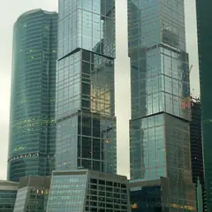
Пресненская наб., 8, стр. 1
Ресторан в Москва-Сити с панорамной террасой, зеленью и фонтанами.
Подробнее и маршрут: Bamboo.BarПозвать сюда: Bamboo.Bar
Фото: BpbAlonka, CC BY-SA 3.0 · Wikimedia Commons
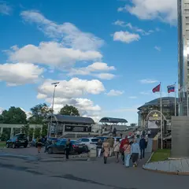
Космодамианская наб., 52, стр. 6 (34-й этаж)
Новое
Круглый бар на 34-м этаже отеля у Павелецкой: обзор на 360° и закат над Москвой-рекой. Стол у окна не бронируют — приходи пораньше, открыто с 16:00.
Подробнее и маршрут: City SpaceПозвать сюда: City Space
Фото: Artyom Svetlov, CC BY 4.0 · Wikimedia Commons
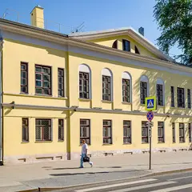
ул. Мясницкая, 42, стр. 2
Готический гастробар во дворах Мясницкой: свечи, белые полотна и росписи с ангелами. Днём завтраки и сэндвичи, по пятницам и субботам — танцы и DJ.
Подробнее и маршрут: KeepПозвать сюда: Keep
Фото здания: Никонико962, CC BY-SA 4.0 · Wikimedia Commons
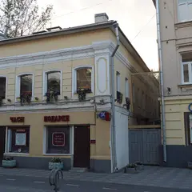
Пятницкая ул., 30, стр. 1
Новое
Советская рюмочная в духе 80-х: с вс по чт «народное караоке» с ведущим, в пт–сб дискотека с хоровым пением, по вт и ср — стендап. Настойки, закуски, до 6 утра.
Подробнее и маршрут: ЕвгеничПозвать сюда: Евгенич
Фото здания: Interstep75, CC BY-SA 4.0 · Wikimedia Commons
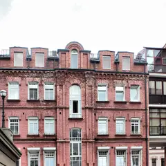
ул. Малая Бронная, 28
Новое
Небольшой коктейльный бар у Патриарших прудов: из окна видно пруд, есть терраса. Роллы и поке, по вечерам DJ, работает до 6 утра.
Подробнее и маршрут: КиануПозвать сюда: Киану
Фото здания: Andris Malygin, CC BY 3.0 · Wikimedia Commons
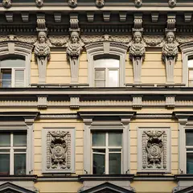
ул. Петровка, 20/1
Новое
Бар в кирпичных сводах бывшей типографии на Петровке, вход через японский ресторан. В будни живой джаз и соул, в пятницу и субботу DJ до 4 утра.
Подробнее и маршрут: MendeleevПозвать сюда: Mendeleev
Фото здания: Никонико962, CC BY-SA 4.0 · Wikimedia Commons
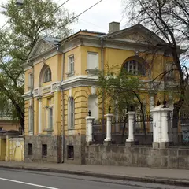
Яузская ул., 10/2, стр. 4
Винная комната, бистро, коктейльный паб и танцпол от промоутеров DFF. 12–00.
Подробнее и маршрут: Restaurant by Deep Fried FriendsПозвать сюда: Restaurant by Deep Fried Friends
Фото здания: NVO, CC BY-SA 4.0 · Wikimedia Commons
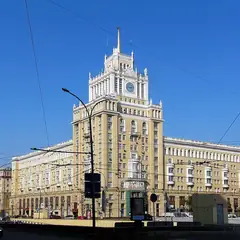
ул. Большая Садовая, 5
Ресторан и терраса на крыше гостиницы «Пекин» у Маяковской.
Подробнее и маршрут: ОблакоПозвать сюда: Облако
Фото: Vladimir OKC, CC BY-SA 3.0 · Wikimedia Commons
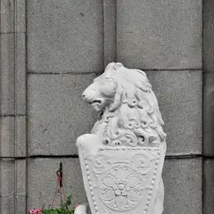
Мясницкая ул., 15
Новое
Ирландский паб на Мясницкой, где футбол на экранах — обычное дело почти каждый вечер, а расписание матчей вывешивают заранее. В пятницу и субботу открыт до 6 утра.
Подробнее и маршрут: Lion's Head PubПозвать сюда: Lion's Head Pub
Фото: Дмитрий Иванов, общественное достояние · Wikimedia Commons
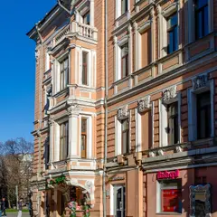
1-я Тверская-Ямская ул., 2, стр. 1
Гастробар у Маяковской: кухня под бокал вина для свиданий и встреч после работы.
Подробнее и маршрут: ВальдоПозвать сюда: Вальдо
Фото здания: Никонико962, CC BY-SA 4.0 · Wikimedia Commons
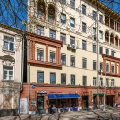
Петровский бул., 15, стр. 1
Регулярные дегустации, лекции о вине и винные вечеринки.
Подробнее и маршрут: Винный базарПозвать сюда: Винный базар
Фото здания: Mike1979 Russia, CC BY-SA 3.0 · Wikimedia Commons
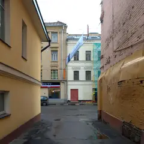
Пятницкая ул., 82/34, стр. 1
Винный бар с широким выбором тихих и игристых вин у Добрынинской.
Подробнее и маршрут: ИгристоеПозвать сюда: Игристое
Фото здания: user:NVO, CC BY-SA 3.0 · Wikimedia Commons
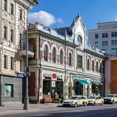
Большая Лубянка, 24/15, стр. 1
Спорт-бар с трибуной для матчей, большим выбором пенного и караоке.
Подробнее и маршрут: Лига ПапПозвать сюда: Лига Пап
Фото здания: Никонико962, CC BY-SA 4.0 · Wikimedia Commons
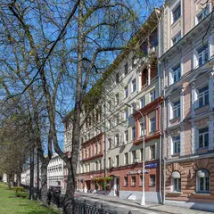
Петровский бул., 15, стр. 1
Винный бар Влады и Макса Лесниченко: больше 100 вин по бокалам.
Подробнее и маршрут: РаблеПозвать сюда: Рабле
Фото здания: Mike1979 Russia, CC BY-SA 3.0 · Wikimedia Commons
Протопоповский пер., 3
Олдскульный пивной бар: кожаные диваны, большой зал, живая русская попса и меню с запечённым поросёнком.
Подробнее и маршрут: Золотая воблаПозвать сюда: Золотая вобла
Зеленоград, корп. 315
Новое
Коктейльный бар с весёлой молодой командой: хайболы, джин-тоник в бутылочке, батат с креветками, настолки и веранда. В пт–сб до 2:00.
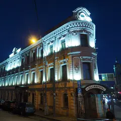
Пятницкая ул., 3/4, стр. 1
Бар в начале Пятницкой — точка старта барного маршрута.
Подробнее и маршрут: Mitzva BarПозвать сюда: Mitzva Bar
Фото здания: Interstep75, CC BY-SA 4.0 · Wikimedia Commons
Тверская ул., 23, стр. 1
Легендарный коктейльный бар: классика, рояль, жёлтые стены и окна в пол.
Зеленоград, Савёлкинский пр., 10
Новое
Ресторан-лаунж в центре Зеленограда: итальянская и паназиатская кухня, настойки, кальяны, диджеи и веранда (вечером на ней курят). В пт–сб до 4 утра.
Украинский бул., 15
Гастропаб Александра Раппопорта у Киевского вокзала: пиво и ностальгическая еда.
Подробнее и маршрут: Гастропаб «Бибирево»Позвать сюда: Гастропаб «Бибирево»
Волгоградский просп., 117, корп. 1
Новое
Пивной бар в шаге от метро «Кузьминки»: много импортного пива, острые крылья, пять экранов для футбола со звуком — на большие матчи стол лучше бронировать. До полуночи.
Подробнее и маршрут: Закон БернуллиПозвать сюда: Закон Бернулли
ул. Большая Дмитровка, 7/5, стр. 5
КруглосуточноНовое
Ресторан-бар на Большой Дмитровке, открыт круглосуточно: завтраки и десерты в любой час, коктейли, летом веранда. Выручает, когда вечер затянулся.
Пушечная ул., 7/5, стр. 2
КруглосуточноНовое
Круглосуточный бар у «Кузнецкого Моста»: авторские коктейли, DJ, стендап и настольные игры. Подойдёт и для разговора вдвоём, и для ночи с танцами.
Подробнее и маршрут: Наука и жизньПозвать сюда: Наука и жизнь
Скандинавский бул., 3, корп. 2 (Коммунарка)
Новое
Гастропаб в Коммунарке: фирменное пиво, рулька, рёбра и пицца на тонком тесте, по вечерам живая музыка и джаз, летом веранда. Ежедневно 12–00.
Подробнее и маршрут: Таверна РобинаПозвать сюда: Таверна Робина
Люблинская ул., 175
Новое
Уютный пивной бар у метро «Марьино»: пиво и сидр в фирменных бокалах — бармены расскажут про каждый сорт, бургеры, настолки и трансляции. 12–00.
Садовая-Каретная ул., 20, стр. 2
Bib Gourmand Michelin 2021
Домашний бар, где хозяева сами готовят пиццу и коктейли. Средний чек ~1 500 ₽.
ул. Петровка, 30/7, фиолетовая дверь с глазом
Бар, названный в честь королевы вуду из Нового Орлеана: вход через фиолетовую дверь с нарисованным глазом, во дворе бывают ужины-путешествия.
Пятницкая ул., 66, стр. 2
Новое
Бар в особняке на Пятницкой: 14-метровая стойка, танцпол со сценой и отдельная караоке-комната для своей компании. Тематические вечеринки, открыт до 6 утра.
Тверской бул., 13, стр. 1
Новое
Ресторан и клуб на Тверском бульваре: сначала ужин, потом танцы. С четверга по субботу открыт до 5 утра, в тёплый сезон работает веранда.
Большой Козихинский пер., 9/12
Новое
Бар в духе 1920-х за зелёной дверью на Патриках: каждый вечер около 21:00 живой джаз, вход свободный, столы не бронируют — просто приходи.
ул. Пресненский Вал, 6, стр. 1
Новое
Паб со своим пивом и отдельным концертным залом у «Улицы 1905 года». Живые концерты, работает до 6 утра — проверенный вариант для вечера с друзьями.
Театральный пр., 2
Исторический бар «Метрополя», переосмысленный как современный коктейльный.
Подробнее и маршрут: Бар «Шаляпин»Позвать сюда: Бар «Шаляпин»
Покровка, 7/9-11, корп. 1
Бар крафтового пива на Покровке.
просп. 60-летия Октября, 20
Новое
Недорогой ирландский паб рядом с «Академической»: матчи Лиги чемпионов и не только, живая музыка по вечерам. В пятницу и субботу открыт до 5 утра.
Подробнее и маршрут: Джоли ЛепреконПозвать сюда: Джоли Лепрекон
ул. Красная Пресня, 25
Английский паб с тридцатилетней историей.
Подробнее и маршрут: Джон Булл ПабПозвать сюда: Джон Булл Паб
Столярный пер., 3
Ресторан-бар на крыше у «Улицы 1905 года»: вечером — коктейли и закат над городом.
Кривоколенный пер., 9, стр. 3
Винный бар с редкими бутылками небольших виноделен.
Кутузовский пр., 2/1, стр. 1
Коктейльный бар на 31 этаже гостиницы «Украина» (бывший Mercedes Bar). 18–06.
Химки, Совхозная ул., 6
Лаунж с караоке, в выходные открыт до 2–4 ночи. Вариант для компании, когда расходиться ещё рано.
Подробнее и маршрут: Мята Lounge ЛевобережныйПозвать сюда: Мята Lounge Левобережный
Яузский бул.
Проект Вани Дмитриенко в особняке на Яузском бульваре с фотогеничным балкончиком.
Готовые планы с этими местами 12 из 58
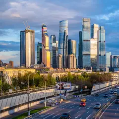
- Смотровая iCITY · Бесплатная смотровая и коворкинг · м. Шелепиха
- 18 минут пешкомBamboo.Bar · Ресторан с террасой
Встретить закат на бесплатной круговой смотровой iCITY, а потом спуститься в квартал на террасу Bamboo.Bar с зеленью и фонтанами — удобно прямо после работы.
Открыть план: Бесплатная смотровая и терраса в СитиПозвать сюда: Бесплатная смотровая и терраса в Сити
Фото: kishjar?, CC BY 2.0 · Wikimedia Commons
- Comedy Hall · Стендап-клуб · м. Павелецкая
- 9 минут пешкомCity Space · Панорамный бар
«Женский стендап» в Comedy Hall у Павелецкой — комикессы и кавер-группа на разогреве, — а потом круглый бар City Space на 34-м этаже с видом на реку.
Открыть план: Женский стендап и бар на 34-м этажеПозвать сюда: Женский стендап и бар на 34-м этаже
Фото: Artyom Svetlov, CC BY 4.0 · Wikimedia Commons
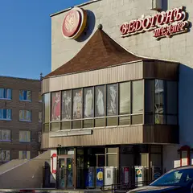
- Ведогонь-театр · Театр · Зеленоград — Крюково (МЦД-3)
- 12 минут пешкомGoodson bar · Коктейльный бар
Комедия в «Ведогонь-театре» с сильной труппой и билетами от 600 ₽, а потом хайболы и джин-тоник в бутылочке в Goodson bar.
Открыть план: Зеленоград: комедия и хайболыПозвать сюда: Зеленоград: комедия и хайболы
Фото: Perituss, CC BY-SA 3.0 · Wikimedia Commons
- Пионер · Кинотеатр · м. Выставочная
- 12 минут пешкомBamboo.Bar · Ресторан с террасой
Фестивальное кино на языке оригинала в «Пионере» на Кутузовском, а после сеанса — по мосту «Багратион» в Сити, ужинать на террасе Bamboo.Bar среди небоскрёбов.
Открыть план: Кино в «Пионере» и терраса в СитиПозвать сюда: Кино в «Пионере» и терраса в Сити
Фото: BpbAlonka, CC BY-SA 3.0 · Wikimedia Commons
- Дом музыки · Концертный зал · м. Павелецкая
- 2 минуты пешкомCity Space · Панорамный бар
Классика, джаз или орган в Доме музыки, а потом лифт на 34-й этаж соседнего отеля: круглый бар City Space смотрит на реку на все 360°. Столы у окна не бронируют — идите сразу после концерта.
Открыть план: Концерт и бар на 34-м этажеПозвать сюда: Концерт и бар на 34-м этаже
Фото: Nevermind2, общественное достояние · Wikimedia Commons
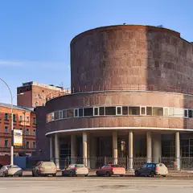
- Здание Центросоюза · Модернизм Ле Корбюзье · м. Сретенский бульвар
- 2 минуты пешкомKeep · Гастробар
Единственное здание Корбюзье в России — розовый туф и стекло, а потом ужин при свечах в Keep через дорогу.
Открыть план: Ле Корбюзье на МясницкойПозвать сюда: Ле Корбюзье на Мясницкой
Фото: Ludvig14, CC BY-SA 4.0 · Wikimedia Commons
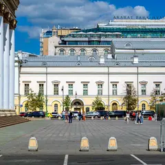
- Малый театр · Театр · м. Театральная
- 3 минуты пешкомНаука и жизнь · Круглосуточный бар
Большая классика в Малом театре, а в трёх минутах — круглосуточный бар «Наука и жизнь»: авторские коктейли и настолки — торопиться некуда.
Открыть план: Малый театр и бар без закрытияПозвать сюда: Малый театр и бар без закрытия
Фото: Никонико962, CC BY-SA 4.0 · Wikimedia Commons
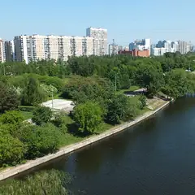
- Парк 850-летия Москвы · Парк · м. Марьино
- 6 минут пешкомЧеддер · Пивной ресторан
Пройтись по набережной Парка 850-летия Москвы, а потом в «Чеддер»: пиво и сидр в фирменных бокалах, бургеры и трансляции — бармены расскажут про каждый сорт.
Открыть план: Набережная в Марьине и сидрПозвать сюда: Набережная в Марьине и сидр
Фото: Brateevsky, CC BY-SA 3.0 · Wikimedia Commons
- Sky Padel · Падел · м. Выставочная
- 4 минуты пешкомBamboo.Bar · Ресторан с террасой
Корт на четверых под стеклянным куполом «Афимолла» — играешь в окружении башен Сити, а потом ужин на террасе Bamboo.Bar прямо в квартале.
Открыть план: Падел среди небоскрёбовПозвать сюда: Падел среди небоскрёбов
Фото: BpbAlonka, CC BY-SA 3.0 · Wikimedia Commons
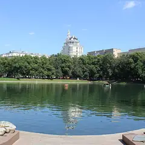
- Патриаршие пруды · Пруд и сквер · м. Маяковская
- 1 минута пешкомКиану · Коктейльный бар
Вечерний круг вокруг Патриарших прудов, а потом маленький бар «Киану», из окна которого видно пруд: коктейли, роллы и диджей до 6 утра.
Открыть план: Патрики и бар с видом на прудПозвать сюда: Патрики и бар с видом на пруд
Фото: Dimа, CC BY-SA 3.0 · Wikimedia Commons
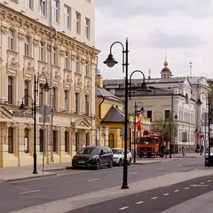
- Пятницкая улица · Улица · м. Новокузнецкая
- 5 минут пешкомЕвгенич · Караоке-рюмочная
Пройтись по вечерней Пятницкой мимо купеческих домов, а потом в рюмочную «Евгенич» в духе 80-х: караоке с ведущим, хоровое пение и настойки до 6 утра.
Открыть план: Пятницкая и народное караокеПозвать сюда: Пятницкая и народное караоке
Фото: Retired electrician, CC0 · Wikimedia Commons
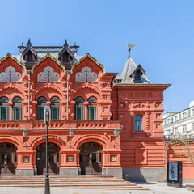
- Театр Наций · Театр · м. Чеховская
- 7 минут пешкомMendeleev · Музыкальный бар
Громкая постановка в Театре Наций в здании театра Корша, а потом Mendeleev в кирпичных сводах бывшей типографии: в будни джаз и соул, в выходные DJ до 4 утра.
Открыть план: Театр Наций и бар в старой типографииПозвать сюда: Театр Наций и бар в старой типографии
Фото: Mike1979 Russia, CC BY-SA 3.0 · Wikimedia Commons

Как позвать
- Выбери план, место или событие — в карточке адрес, цены и маршрут в Яндекс Картах.
- Нажми «Позвать сюда» — соберётся приглашение-игра для свидания или голосование для компании.
- Отправь ссылку в любой мессенджер: тебе ответят, а компания отметит, куда и когда может. Бесплатно и без регистрации.